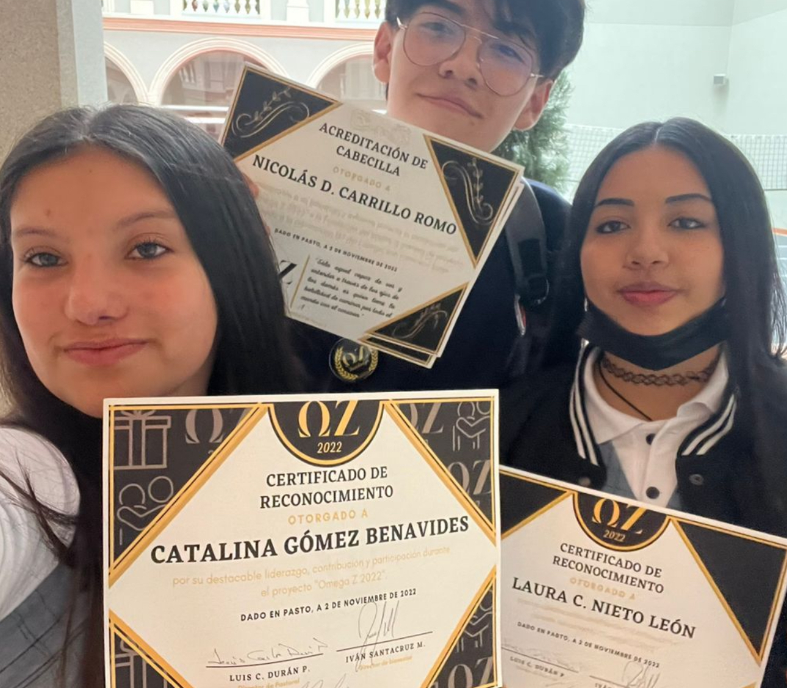
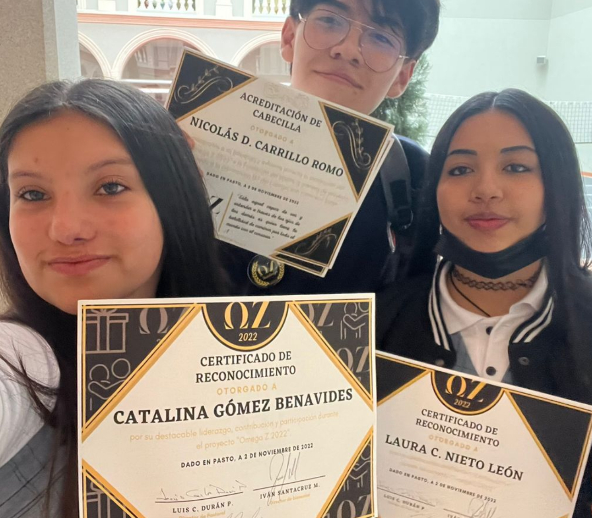

Omega Z: Ayuda en tiempos de crisis
Hace 2 años, cuando el puente entre la juventud y el final de un ciclo se empezaban a conectar, a puertas de mi ultimo año en el colegio, decidí empezar uno de los proyectos más grandes que ha tenido mi colegio en su historia, algo que aseguraba podía cambiar el rumbo en aquellas personas que necesitaban un soporte, un flotador en el inmenso mar de la incertidumbre. Recordando los viejos momentos de mi proyecto pasado, hace ya un año, recordé todo lo que impartí al realizarlo: Alegría y esperanza. Una vez me ponía a pensar, qué se sentirá estar a punto de cambiar tu vida por completo, la presión por estudiar una carrera, por decidir quienes quieren ser en la vida. A veces me he preguntado porqué nos dejan este tipo de desiciones a aquellos que nos falta mucho por conocer, somos jóvenes y siempre estaremos en incertidumbre sobre cada desición que tomemos. Y en este contexto de pensamiento, ideé un nuevo proyecto misterioso, para aquellos temorosos por el venidero mañana, para acompañarlos, no como un héroe o una figura pública que todos aclaman y respetan por sus hazañas, si no, como la presencia secreta de alguien a quien realmente cree en que, independientemente de tus desiciones, te estará apoyando y acompañando desde las sombras.
Fase 1: Generación Unida, jamás será vencida (2022)
El proyecto inicia sentando bases en la Generación 137 (Prom 2022), destacando por sus principios fundamentales Empatía, Amor y Solidaridad. El nombre "Omega Z"
difiere un sin número de simbolismos y la síntesis del proyecto, integraba casi todos. Aquí unos de los más comunes: Omega y Z son las últimas letras en alfabetos
distintos, eso significaba el fin de un ciclo sin importar de donde seas o de donde vengas, tampoco a donde irás o que harás, al final todos cumplimos
un mismo ciclo en la vida que se repite por años y décadas. Una de las principales características de Omega Z es el misterio y de ahí desenbocan los mensajes ocultos y
criptados, es por ello que si dibujas correctamente las letras de Omega y Z y las giras a la izquerda 90 grados, obtendrás las iniciales de su creador, una persona que fue
muy cuestionada y buscada durante la estadía de Omega Z, pues este proyeco era único en su tipo y no se había realizado algún otro más anteriormente.
en Febrero de 2022 con su primer gran aparición: El evento de San Valentín, marcó el inicio de la busqueda y el misterio para 7 estudiantes aleatorios de una de las secciones
de Once (no desesperes, no sólo fueron 7), Omega Z inició repartiendo unas deliciosas chocolatinas junto a la icónica tarjeta Omega que se conservó hasta más adelante en los datalles dados
después, se formalizó como un proyecto Pastoral del colegio, gracias distintos acuerdos con Bienestar y Pastoral a los que acudí
con persistencia, esto no solo signficaba apoyo de distintos tipos, sino que se conservaría en la historia del colegio como un proyecto social sin precedentes.
Inicialmente, el Equipo Omega Z se integraba de 2 personas, las cuales trabajábamos arduamente por idear nuevas apariciones de Omega, por ello, el siguiente evento fue con motivo
de las Pruebas ICFES, pues pesaban gran parte sobre cualquier desición o camino que los estudiantes querían tomar, ante dicha presión y temor, Omega volvió a elegir aleatoriamente
estudiantes de otra sección distinta, esta vez asegurando una secuela y regreso en las secciones faltantes. Por lo tanto, empezaron los mensajes de grupo, donde, en los tableros de
los salones se encontraban mensajes encriptados bajo distintos tipos de encriptación usual del cifrado por sustitución. El cual se incluía en algunas tarjetas de Omega. Pasaron los eventos
y llegamos al punto en el que todos los salones ya habrían recibido sus regalos, y más de 50 beneficiarios por el proyecto de Omega Z durante sus 4 eventos. Pasaron varios meses en donde se
estructura la creación del evento final. Un evento sin precedentes antes de la gran esperada "Ceremonia de graduación", por meses se recolectó y se proyectó la realización de este. Empezamos la formalización
de un grupo de estudiantes que habían sido de gran apoyo para Pastoral, por ende, hicimos un grupo conformado de 3 áreas específicas y sus respectivos colaboradores: Área de redacción y diseño, para los más de
100 mensajes que escribiríamos a cada estudiantes los cuales serían respectivamente encriptados, El equipo administrativo de planificación que estructuraba los medios y actividades que se llevarían a cabo. Y
finalmente, el área de Producción y ejecución, quienes hacían posible todo lo escrito desde el área de planificación, para este gran evento, planificamos grandes actividades bajo el lema "Generación unida, jamás
será vencida". En esta ocasión, para Omega Z me centré en distintas historias que me contaban los estudiantes sobre su Generación, el hecho de haber crecido como una familia desde primaria y que se hagan tanto daño
tanto moral como físico incluso, me hice pensar que ellos necesitaban actividades dinámicas para que en su cierre para dicho camino, desde rompecabezas, hasta búsquedas del tesoro, nunca faltando un pequeño compartir
que incentivaba a todos a participar más activamente del evento. Al día siguiente, se hizo la entrega de alrededor de 120 cajas de regalo Omega a estudiantes y colaboradores, con sus respectivas tarjetas y para los
estudiantes, con un diseño especial tomando en cuenta el camino por el que irán al salir de aquel hermoso lugar con su diploma y sus medallas. El final de Omega Z fue todo un éxito y se aclamó por muchos de esta generación.
Reconocimientos y premiación
Con motivo de mi innovación y mi espíritu colaborador para aquellos jóvenes inciertos, se me hizo una intervención en la primer izada de bandera del año siguiente, donde además de permitirme realizar un discurso, me hicieron entrega no solo a mí, si no a mis más grandes colaboradores, de los diplomas de participación en el proyecto Omega Z, a la cual asistieron distintas personas importantes de Nariño y sus alrededores, en la cual destaca el Padre provincial de la Compañía de Jesús en ese entonces. Además de tal nivel de acreditación y reconocimiento, se hizo una breve mención al proyecto en una de las ediciones del Diario del Sur. Algo magnífico que sucedió en mi vida y marcó el deseo de una secuela.
Fase 2: Nuevos Comienzos
En escritura...